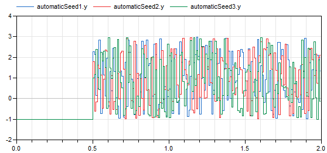

Library of examples to demonstrate the usage of package Blocks.Noise
This package contains various example models that demonstrates how to utilize the blocks from sublibrary Blocks.Noise.
Extends from Modelica.Icons.ExamplesPackage (Icon for packages containing runnable examples).
| Name | Description |
|---|---|
| Demonstrates the most simple usage of the UniformNoise block | |
| Demonstrates noise with startTime and automatic local seed for UniformNoise | |
| Demonstrates noise with different types of distributions | |
| Demonstrates the computation of properties for uniformly distributed noise | |
| Demonstrates the computation of properties for normally distributed noise | |
| Demonstrates how to compute distribution densities (= Probability Density Function) | |
| Demonstrates the usage of the impure random number generator | |
| Demonstrates how to model measurement noise in an actuator | |
| Demonstrates how to model wind turbulence for aircraft with the BandLimitedWhiteNoise block (a simple model of vertical Dryden gust speed at low altitudes < 1000 ft) | |
| Library of utility models used in the examples |
 Modelica.Blocks.Examples.Noise.UniformNoise
Modelica.Blocks.Examples.Noise.UniformNoiseDemonstrates the most simple usage of the UniformNoise block
This example demonstrates the most simple usage of the Noise.UniformNoise block:
At every 0.02 seconds a time event occurs and a uniform random number in the band between -1 ... 3 is drawn. This random number is held constant until the next sample instant. The result of a simulation is shown in the next diagram:
Extends from Modelica.Icons.Example (Icon for runnable examples).
Modelica.Blocks.Examples.Noise.AutomaticSeedDemonstrates noise with startTime and automatic local seed for UniformNoise
This example demonstrates manual and automatic seed selection of UniformNoise blocks, as well as starting the noise at startTime = 0.5 s with an output value of y = -1 before this time. All noise blocks in this example generate uniform noise in the band y_min=-1 .. y_max=3 with samplePeriod = 0.01 s.
The blocks automaticSeed1, automaticSeed2, automaticSeed3 use the default option to automatically initialize the pseudo random number generators of the respective block. As a result, different noise is generated, see next diagram:

The blocks manualSeed1, manualSeed2, manualSeed3 use manual selection of the local seed (useAutomaticLocalSeed = false). They use a fixedLocalSeed of 1, 2, and 3 respectively. Again, different noise is generated, see next diagram:
Try to set fixedLocalSeed = 1 in block manualSeed2. As a result, the blocks manualSeed1 and manualSeed2 will produce exactly the same noise.
Extends from Modelica.Icons.Example (Icon for runnable examples).
| Name | Description |
|---|---|
| startTime | Start time of noise [s] |
| y_off | Output of block before startTime |
Modelica.Blocks.Examples.Noise.DistributionsDemonstrates noise with different types of distributions
This example demonstrates different noise distributions methods that can be selected for a Noise block. Both noise blocks use samplePeriod = 0.02 s, y_min=-1, y_max=3, and have identical fixedLocalSeed. This means that the same random numbers are drawn for the blocks. However, the random numbers are differently transformed according to the selected distributions (uniform and truncated normal distribution), and therefore the blocks have different output values. Simulation results are shown in the next diagram:
As can be seen, uniform noise is distributed evenly between -1 and 3, and truncated normal distribution has more values centered around the mean value 1.
Extends from Modelica.Icons.Example (Icon for runnable examples).
| Name | Description |
|---|---|
| samplePeriod | Sample period of all blocks [s] |
| y_min | Minimum value of band for random values |
| y_max | Maximum value of band for random values |
Modelica.Blocks.Examples.Noise.UniformNoisePropertiesDemonstrates the computation of properties for uniformly distributed noise
This example demonstrates statistical properties of the Blocks.Noise.UniformNoise block using a uniform random number distribution. Block "noise" defines a band of 0 .. 6 and from the generated noise the mean and the variance is computed with blocks of package Blocks.Math. Simulation results are shown in the next diagram:
The mean value of a uniform noise in the range 0 .. 6 is 3 and its variance is 3 as well. The simulation results above show good agreement (after a short initial phase). This demonstrates that the random number generator and the mapping to a uniform distribution have good statistical properties.
Extends from Modelica.Icons.Example (Icon for runnable examples).
| Name | Description |
|---|---|
| y_min | Minimum value of band |
| y_max | Maximum value of band |
| pMean | Theoretical mean value of uniform distribution |
| var | Theoretical variance of uniform distribution |
| std | Theoretical standard deviation of uniform distribution |
Modelica.Blocks.Examples.Noise.NormalNoisePropertiesDemonstrates the computation of properties for normally distributed noise
This example demonstrates statistical properties of the Blocks.Noise.NormalNoise block using a normal random number distribution with mu=3, sigma=1. From the generated noise the mean and the variance is computed with blocks of package Blocks.Math. Simulation results are shown in the next diagram:
The mean value of a normal noise with mu=3 is 3 and the variance of normal noise is sigma^2, so 1. The simulation results above show good agreement (after a short initial phase). This demonstrates that the random number generator and the mapping to a normal distribution have good statistical properties.
Extends from Modelica.Icons.Example (Icon for runnable examples).
| Name | Description |
|---|---|
| mu | Mean value for normal distribution |
| sigma | Standard deviation for normal distribution |
| pMean | Theoretical mean value of normal distribution |
| var | Theoretical variance of uniform distribution |
| std | Theoretical standard deviation of normal distribution |
Modelica.Blocks.Examples.Noise.DensitiesDemonstrates how to compute distribution densities (= Probability Density Function)
This example demonstrates how to compute the probability density functions (pdfs) of various distributions. In the following diagram simulations results for the uniform, normal, and Weibull distribution are shown. The outputs of the blocks are the pdfs that are plotted over one of the inputs:
Extends from Modelica.Icons.Example (Icon for runnable examples).
Modelica.Blocks.Examples.Noise.ImpureGeneratorDemonstrates the usage of the impure random number generator
This example demonstrates how to use the impureRandom(..) function to generate random values at event instants. Typically, this approach is only used when implementing an own, specialized block that needs a random number generator. Simulation results are shown in the next figure:
Extends from Modelica.Icons.Example (Icon for runnable examples).
Modelica.Blocks.Examples.Noise.ActuatorWithNoiseDemonstrates how to model measurement noise in an actuator
This example models an actuator with a noisy sensor (which is in the motor component):
The drive train consists of a synchronous motor with a current controller (= motor) and a gear box. The gearbox drives a rod through a linear translation model. Softly attached to the rod is another mass representing the actual actuator (= mass). The actuator is loaded with a constant force.
The whole drive is steered by a rate limited speed step command through a controller model. In the motor the shaft angle is measured and this measurement signal is modelled by adding additive noise to the motor angle.
In the following figure, the position of the actuator and the motor output torque are shown with and without noise. The noise is not very strong, such that it has no visible effect on the position of the actuator. The effect of the noise can be seen in the motor torque.

Note, the noise in all components can be easily switched off by setting parameter enableNoise = false in the globalSeed component.
Extends from Modelica.Icons.Example (Icon for runnable examples).
Modelica.Blocks.Examples.Noise.DrydenContinuousTurbulenceDemonstrates how to model wind turbulence for aircraft with the BandLimitedWhiteNoise block (a simple model of vertical Dryden gust speed at low altitudes < 1000 ft)
This example shows how to use the BandLimitedWhiteNoise to feed a Dryden continuous turbulence model. This model is used to describe turbulent wind at low altitudes that varies randomly in space (see also wikipedia).
The turbulence model of the Dryden form is defined by the power spectral density of the vertical turbulent velocity:

The spectrum is parametrized with the following parameters:
Using spectral factorization and a fixed airspeed V of the aircraft, a concrete forming filter for the vertical turbulence can be found as
 ,
,
for which V * (H_w(i Omega/V) * H_w(-i Omega/V) = Phi_w(Omega).
The input to the filter is white noise with a normal distribution, zero mean, and a power spectral density of 1. That means, for a sampling time of 1s, it is parameterized with mean=0 and variance=1. However, in order to account for the change of noise power due to sampling, the noise must be scaled with sqrt(samplePeriod). This is done automatically in the BandLimitedWhiteNoise block.

Extends from Modelica.Icons.Example (Icon for runnable examples).
| Name | Description |
|---|---|
| V | Airspeed of aircraft (typically 140kts during approach) [m/s] |
| sigma | Turbulence intensity (=0.1 * wind at 20 ft, typically 30 kt) [m/s] |
| L | Scale length (= flight altitude) [m] |